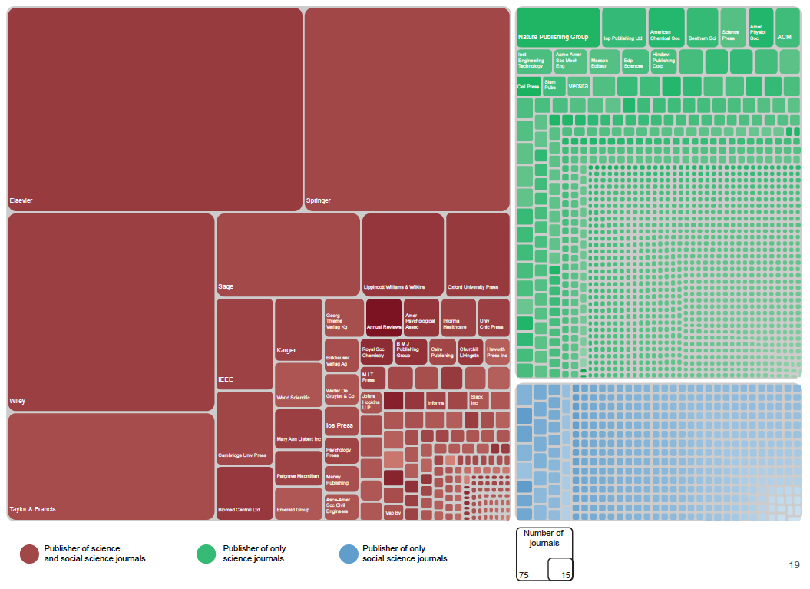
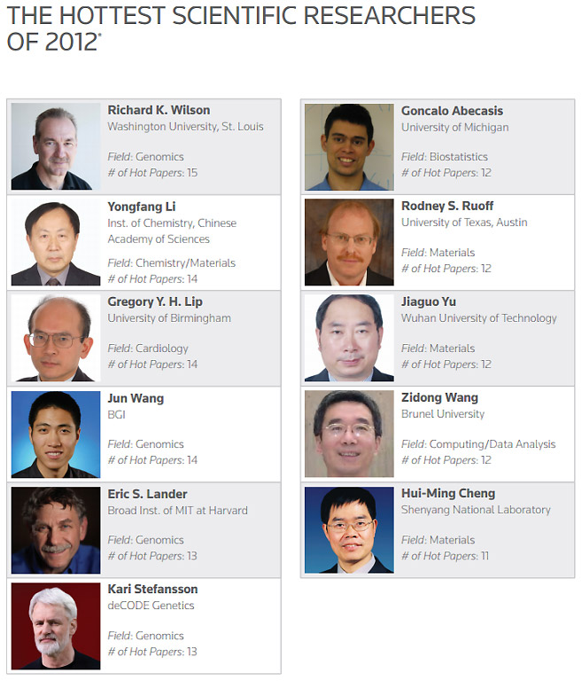

Unit 6: World Class: Analytics, Hubris, or ?

Scan this list of terms currently circulating in the higher education sector:
‘world-class’, ‘international excellence’, ‘mega’, ‘gold-standard’, ‘h-index’, ‘top-ranked’, ‘impact-factor’, ‘hottest’ – and we’re sure you can add to this list.
What connects them together? In some way or other they are referring to the best , the brightest, or the biggest – whether as a university, an academic researcher, or an academic publishing outlet.
Now, if you’re thinking these rather hubristic, ego-inflated terms are in overdrive, you’re right. But that is not to say they don’t have effects. This ramped-up language is transforming the landscape around knowledge production, circulation, and consumption in the higher education world, and what and who is to be valued.
The pace of change is nothing short of remarkable. Gone are the days when life within the university moved at a glacial pace and change came slowly (although, for sure, this still happens in both welcome and irritating ways). Even the language of university innovation and reform—‘incubators’, ‘accelerator funds’, ‘catapult’ and so on—as one of our former doctoral students Filip Vostal argues, captures something of this zeitgeist.
Universities—and here we mean academics, administrators and students—are increasingly finding themselves pressed into action from multiple directions.
Is This Hubris, or What?
Throughout this MOOC, we have been arguing words do important political work. For this reason, they matter. It is therefore important we look closely at ideas like ‘world class’, or annual listings of the world’s ‘hottest researchers’, and what they are being asked to do and by whom.
We’re hoping you had the opportunity to sink your teeth into last week’s class exploring the ways powerful global framers, such as the OECD and EU, shape agendas around higher education, especially its role in driving a new regime of global competitiveness. If you did, you are well on the way to having some of the answers to the questions posed above.
Last week we outlined the ways in which universities are directly and indirectly mobilised in policies aimed at setting the conditions for an economic ‘race to the top’. Universities are regarded as a key institution for bringing this about. Through recruiting talented students and staff, through creating new knowledge and ideas, through turning ideas into innovations and intellectual property, they contribute to a wide-ranging drive for global economic competitiveness.
We also examined the ways in which this race is being shaped by geo-economic and strategic concerns: the rise of China, the declining position of the USA as the dominant investor in knowledge intensive industries, growth in the Latin America, Europe’s attempts to navigate through the consequences of the 2008 financial crisis, and so on. These shifts in world order are not only intensifying global competition, but more importantly are raising the profile of knowledge-intensive industries, such as universities and allied industries, including university research outputs, data management and academic publishing.
New Governing Technologies and Emerging Counter-Tendencies…
This week we turn our attention to how. That is, we look at the various ‘technologies’ (broadly defined) being deployed to drive and guide global competition amongst universities and researchers. These technologies include world university rankings, and a burgeoning bibliometric industry that is promoting ‘h-indexes’, lists of ‘hottest papers’, ‘hottest researchers’, and so on.
We’ll also be exploring a range of other movements or counter-tendencies at play. These include broadening access to the vast (and growing) mountains of knowledge being produced by the higher education sector, through (i) open-source knowledge and code; (ii) open access to journal articles and books; (iii) opening up libraries and other archives; (iv) opening up journal publishing to mega-publishing, drawing in a new range of knowledge producers who themselves act as referees (crowd-sourcing referee processes), and (v) Massive Open Online Courses, or MOOCs, the latter of which everyone this far along should have ample experience with! These counter movements are being driven by the view that knowledge should be a global commons, and that a truly global knowledge society is one that has access to this knowledge.
Let’s now take a look at the ways in which the ‘best’, ‘brightest’, and ‘biggest’, as well as a series of counter-tendencies, are at work remaking higher education.
‘Simply the best’
…World University Rankings…
Ellen Hazelkorn, an expert on global rankings, noted recently that the emergence of world university rankings—for instance the Shanghai Jiao Tong Academic Ranking of World Universities (ARWU), CWTS Leiden Ranking, QS World University Rankings, SCImago, Times Higher Education World University Rankings, or U-Multirank—have been a ‘game changer’. By this she means that there has been an intensification of cross-national comparisons, in turn shaping institutional performance and productivity.
But where have world university rankings come from, and why? And what is it about how these rankings that has given them the power to direct institutions and national governments—in short, to change the game?
In beginning this task, it is useful to look at the main global ranking systems—how they work, and for whom, and what the critics say about them.
The Shanghai Jiao Tong ranking

In 2003, Shanghai Jiao Tong University launched what was to become the Academic Ranking of World Universities ( ARWU), also known as the Shanghai Ranking. The development of the ARWU was backed by the Chinese government to provide a global benchmark against which various universities in China could assess their progress in catching up with the West in terms of scientific research. In developing their methodology, researchers at Shanghai Jiao Tong University used the prestigious US universities as the model using their distinguished Nobel Award Alumni, publications in leading science journals, and international student body as the benchmarks.
The Shanghai Ranking uses a composite multi-indicator—six indicators that comprise the index are scaled and combined in a single series to enable the creation of a league table. The indicators are Nobel Prizes in the science disciplines and Fields Medals in mathematics won by graduates (10%); the same awards won by faculty (20%); faculty citation rate as documented in the ISI-Thompson (20%); number of papers indexed in the Web of Knowledge citation list in the previous year (20%); the number of papers in Science and Nature in the previous 5 years (20%), and the above indicators combined and expressed on a per full-time faculty basis (10%). Universities are then ranked from 1-100 and grouped as 101-150, 151-200, and so on.
Not surprisingly, given the criteria and how this ranking was developed, the Shanghai Ranking favours famous research-intensive universities, such as Harvard, Stanford, UC Berkeley, MIT, Caltech, and so on. And of the top 10 ‘world class’ universities ranked in 2013, 8 are US based and 2 (surprise, surprise!! - Oxford and Cambridge) are UK universities.
Critics like Simon Marginson (whom you heard from in Weeks 1 & 3) argue that the Shanghai Ranking is the best of a problematic lot; it does not properly represent the social sciences and the humanities, Nobel Prizes tend to reward past rather than present activities, and research is elevated above teaching. However, in his view, this ranking tool reflects real-world science output and impact. Whilst this is true, inasmuch as the research endeavours and outputs of these institutions are globally significant, the rub is that other universities around the world are being compared with these elite institutions, yet they do not have a matching resource base.
From the THE-QS to Times Higher and QS
In 2004, one year after the first Shanghai Rankings, the Times Higher Education (THE) and Quacquarelli Symonds (QS) World University Rankings (THE-QS) was launched. However this was followed by a spectacular rift between the two partners in 2009. They have now gone their separate ways, but the new rankings that resulted share some common features in terms of how they work.
The Quacquarelli Symonds (QS) ranking is also a multi-indicator ranking that standardises and scales data in five areas to create a single league table. Its indicators cover a wider range of areas than the ARWU: academic reputation for teaching and research (40%), reputation amongst graduate students (10%), teaching using a proxy indicator of staff-student ratio (20%), citations per full-time academic faculty (20%), and the proportion of students (5%) and faculty (5%) who are international.
The QS presents us with a rather different ordering of the top 10 world class universities, this time with MIT (US) at the top, and with 4 universities from the UK (Cambridge, Oxford, University College London, Imperial) now in the top 10.
Critics point out, however, that what limits the trustworthiness of this tool is that around half of the score is based on surveys on reputation. This raises questions for us, such as who was surveyed?, what was the response rate?, and do those surveyed have the full knowledge of the reputation of the sector, beyond a few well-known institutions?
Critics also point to volatility in the rank ordering of universities in the QS list, suggesting that universities are ‘gaming’ (or trying to manage) the system. After all, it doesn’t seem as if institutions should vary much in these measures from year to year. Note that rankings are triggering important government policy decisions about higher education institutions, based on where they sit in the world rankings. For example, Denmark gave the green light to significant institutional mergers to ensure they met the ranking criteria. China and Taiwan have invested heavily in topping up the research resources of the top universities, and begun to recruit international students to look at ways of moving up the rankings. And given the significance that governments are placing on university-based research as a proxy for being globally competitive, they may be as much about geopolitical positioning as a measure of quality.
The Times Higher Education

Perhaps the most significant alternative ranking system to the Shanghai Rankings is the Times Higher Education ranking. Styling itself as “the global authority on higher education performance”, the Times Higher Education (THE) launched a reinvention of itself as a global university ranking expert following its break with QS. Now partnered and powered by Thompson-Reuters, a Canadian media and information firm, the THE World University Rankings publishes both general global and specialist regional and subject rankings.
Times Higher Education World University Rankings 2013-2014 results
So how does the Times Higher Ranking work? The Times Higher uses a range of separate indicators that are then turned into 1 composite indicator, which, like the other rankings, is reported once a year. This composite figure is made up from: reputational surveys for teaching and research (34.5%), bibliometric indicators (34.5%), income indicators (10.74%), PhD studies (8.25%), internationalisation (7.5%), and staff-student ratio (4.5%). Here, again, critics point to the percentage of the overall total that is dependent upon reputational surveys, and of annual fluctuations in the positioning of some universities.
The Times Higher Rankings, like QS, have become quite entrepreneurial around the development of new ranking products, including its most recent launch of its World Reputation Rankings, BRICS and Emerging Economies Rankings, One Hundred Under Fifty Rankings, and Asia University Rankings. The segmentation of the data into distinct ‘products’ is arguably a sign of both an interest in providing more nuanced analysis but also creating new markets. Indeed it begs the question: how have the temporal rhythms of rankings become normalized into the cycle they have, and why? What do you think about this issue?
By now you will begin to see that each ranking system has a rather different list: the Times Higher 2013 ranking is headed by Caltech, followed by Oxford, Harvard, Stanford …with Imperial College now listed in 10th place. Now only 3 UK universities are in the top 10 and the rest are US-based.
U-Multirank
By early 2010, the European Commission had announced its own contender in the global rankings game: U-Multirank. Concerned with the poor ranking of many European universities (and by this they mean continental European universities) in main ranking systems, the European Commission funded a research consortium to develop a different kind of ranking tool which will launch in 2014.
A key feature of U-Multirank is that it will not depend upon rank hierarchies. Instead it puts universities into 3 performance bands. It will also provide data on a large number of areas of teaching, learning, research, and services for both disciplines and institutions, with the view to making this useful for universities. This will allow users to choose their own criteria and weightings for making comparisons.
Supporters argue that this wider range of indicators comes closer to what it is that a university actually does, and thus makes it more inclusive. But here is the catch. Does it risk being regarded as less important because it does NOT develop an individualised rank hierarchy? Will this dissipate the disciplinary power of this particular ranking tool and thus limit the effect on those it intends to influence?
Keep an eye on the U-Multirank website as it formally launches in mid-to-late May 2014, a few weeks after this course ends.
Regulating the Rankers? - IREG
We’d be remiss if we did not point to a further group – the IREG Observatory on Academic Ranking and Excellence (in short: IREG Observatory) whose role is to regulate the rankers. So far, so good! Founded in 2004, with a Secretariat located in Warsaw, Poland IREG is “…an international institutional non-profit association of ranking organizations, universities and other bodies interested in university rankings and academic excellence. Its purpose is strengthening of public awareness and understanding of range of issues related to university rankings and academic excellence.” In 2006 IREG met with the UNESCO European Centre for Higher Education (UNESCO-CEPES) in Bucharest, and the Institute for Higher Education Policy in Washington, DC, to produce a set of industry standards around world university rankings, called the Berlin Principles (see Box 1).
Box 1: Berlin Principles for World Rankers and Rankings (2006)
A) Purposes and Goals of Rankings
- Be one of a number of diverse approaches to the assessment of higher education inputs, processes, and outputs.
- Be clear about their purpose and their target groups.
- Recognize the diversity of institutions and take the different missions and goals of institutions into account.
- Provide clarity about the range of information sources for rankings and the messages each source generates.
- Specify the linguistic, cultural, economic, and historical contexts of the educational systems being ranked.
B) Design and Weighting of Indicators
- Be transparent regarding the methodology used for creating the rankings.
- Choose indicators according to their relevance and validity.
- Measure outcomes in preference to inputs whenever possible.
- Make the weights assigned to different indicators (if used) prominent and limit changes to them.
C) Collection and Processing of Data
- Pay due attention to ethical standards and the good practice recommendations articulated in these Principles.
- Use audited and verifiable data whenever possible.
- Include data that are collected with proper procedures for scientific data collection.
- Apply measures of quality assurance to ranking processes themselves.
- Apply organizational measures that enhance the credibility of rankings.
D) Presentation of Ranking Results
- Provide consumers with a clear understanding of all of the factors used to develop a ranking, and offer them a choice in how rankings are displayed.
- Be compiled in a way that eliminates or reduces errors in original data, and be organized and published in a way that errors and faults can be corrected.
But wait for it! Many of the key players in the ranking industry are also on the IREG governing body! Surely not, we hear you say. Yes, and this raises BIG questions about a conflict of interests between the rankers and their own regulation, especially as they are also driven by commercial interests. You might give some thought as to what kind of relationship would pass a test of proper accountability…
Who Buys into Rankings, and Why?
Walkway to City University of Hong Kong, Hong Kong
Photograph courtesy Susan Robertson
The question of who buys into the idea of ‘world class rankings’ and why is important, for it is only by engaging people this way—by getting buy-in from parties out there in the world—that rankings acquire the power that they have. Who, then, are they? And what gives rankings the appeal to those who buy into them and gives rankings such performative, and transformative, power?
The ‘public accountability’ argument…
Analysts like Usher and Savino argue that international ranking schemes are bought into by institutions and governments that argue rankings play a quality assurance role by transparently providing information to the public.
Based on this line of thinking, rankings of universities are simply one example in a wider array of accountability instruments that have emerged to assess and govern university life (for example, accreditation, cyclical reviews, external evaluation by peers, inspection, audits, benchmarking, and research assessments).
Whilst acknowledging that the systematic use of league tables, as a widespread phenomenon, has a history of around a decade, wider concerns over their rise are seemingly allayed by the argument that rankings have a longer history in the USA, beginning in the 1870s. What makes the current period different, it is argued, are changes in the sector itself: the massification of higher education; unprecedented increases in enrolments; the expansion of the sector with new private, for-profit providers; and the internationalisation of tertiary education. These developments within the sector, it is argued, have caused stakeholders to demand greater accountability, transparency, and efficiency, giving rise to new incentives for “quantifying quality”.
‘Transforming the university’ argument…
Ellen Hazelkorn is critical of analyses and explanations that focus primarily on transparency and accountability, arguing that they do not fully explain the almost instantaneous and universal endorsement and obsession with the Shanghai Jiao Tong and Times Higher Education initiatives that were respectively launched in 2003 and 2004.
Her argument is that rankings are one of a number of policy instruments and management tools aimed at transforming universities into strategic corporations engaged in positional competition. By appearing to strengthen or grant visibility to some institutions, rankings also expose perceived weaknesses at the system and institutional level. They make it seem as if to succeed, or even just to survive, requires significant changes in the ways that HEIs conduct their affairs. In other words, rankings are both mechanisms and instruments for deeper social change within the higher education sector.
Take a listen to Ellen Hazelkorn’s own words about rankings in this podcast. She Director of Research and Enterprise, and Dean of the Graduate Research School, Dublin Institute of Technology, Ireland; she also leads the Higher Education Policy Research Unit. She works closely with the International Association of Universities (IAU), and is a consultant to the OECD. She is a member of the Higher Education Authority (Ireland), and incoming President of EAIR – the European Higher Education Society. She is the author of Rankings and the Reshaping of Higher Education: The Battle for World-Class Excellence (Palgrave Macmillan, March 2011).
Hazelkorn identifies six ways in which rankings influence and reshape higher education institutions: (i) student choice—competitive post-graduates, in particular, seek highly-ranked universities; (ii) strategic thinking and planning—particularly the selective choice of indicators for management purposes; (iii) the reorganisation and restructuring of higher education institutions to enable them to respond to, or take advantage of, rankings; (iv) reshaping priorities, such as focusing on research, changing the curriculum attracting international students, or harmonising programmes; (v) academic profession—used to identify and recruit the best performers; and (vi) stakeholders, such as alumni, who view rankings as a proxy for the return on their investment in the institution.
Many of these different strategies can be seen at work in state programs transforming HE. Germany has used rankings to help better define targets and promote a more distinctive profile. Australia, on the other hand, with a very strong export market in education services, uses rankings as part of its export machinery and branding to attract international students. Both Denmark and Finland have used the rankings to frame and legitimize the merger of several of its higher education institutions, whilst Japan has promoted the idea of a highly-ranked university to generate internal changes within Japanese universities, including greater internationalization, and the development of more competitive research by developing centres of excellence.
‘Fundamental transformations in the use of knowledge’ argument…
A third line of argument comes from analysts like Simon Marginson and some of our own work on world university rankings. For Marginson, rankings are technologies for assigning a value to knowledge goods and flows in a new political economy of knowledge, in turn generating a new status economy. In other words, Marginson argues that reputation and status derived from knowledge (as a credential, the kind of institutions the credential was acquired in) become even more importantin a knowledge-based economy.
We tend to agree with Simon, but there is another question that is bothering us. Why do we care so much about the actual and potential uses of bibliometrics and world university ranking methodologies, and focus so little on the private sector firms (such as Elsevier, producer of Scopus; Thomson Reuters, producer of the ISI Web of Knowledge; Google - producer of Google Scholar), who are driving the use of bibliometrics and ranking? What are their interests here? What is in it for them when we both buy, and buy into rankings and bibliometric measures?
Our bigger point here is that there is a disjuncture between the volume of research conducted on rankings (and bibliometrics) versus research on these firms (the bibliometricians), and how these technologies are brought to life and to market. For
example, a search of Thomson Reuter’s ISI Web of Knowledge for terms like Scopus, Thomson Reuters, Web of Science, and bibliometrics generates a nearly endless list of articles comparing the main databases, and the innovations associated with them,
but amazingly little research on Elsevier or Thomson Reuters (that is, the firms). The role of firms, such as Elsevier and Thomson Reuters,
QS Quacquarelli Symonds Ltd, and TSL Education Ltd, in fueling the global rankings phenomenon
has received remarkably little attention, in contrast to vigorous debates about methodologies. For example, the four main global ranking schemes, past and present (the Shanghai Jiao Tong University’s Academic Ranking of World Universities (2003 -); the Times Higher Education/QS World University Rankings (2004-2009); Times Higher Education/Thomson Reuters World University Rankings (2010-); QS World University Rankings (2010 -)), all draw from the databases provided by Thomson Reuters and Elsevier.

One of the interesting aspects of the involvement of these firms with the rankings phenomenon is that they have helped to create a normalized expectation that the main rankings happen once per year, even though there is no clear (and certainly not stated) logic for this level of frequency apart from a vague 'this is the way the market works'.
From a firm perspective, the annual cycle arguably needs to become normalized for it is a mechanism to extract a steady stream of freely-provided data out of universities. This data is clearly used to rank, but also feeds into the development of ancillary services and benchmarking capabilities that can be sold back to universities, funding councils, foundations, intergovernmental organizations, and the like.
Thomson Reuters developed their Global Institutional Profiles Project in 2009. As the firm notes:
Our aim with the Global Institutional Profiles Project, which includes our work with Times Higher Education’s World University Rankings, is to develop a data source that provides the best informed and most effective resource to build profiles of universities and institutions around the world. The Profiles Project will create data-driven portraits of globally significant institutions, combining reputational assessment, scholarly outputs, funding levels, faculty characteristics and much more in one comprehensive database. Thomson Reuters also brings a celebrated legacy of data transparency to the Profiles Project, operating with clear methodology and data gathering practices. The added input variables, more transparent methodology, and many additional project elements will provide the nuances to explain a wide range of ranking initiatives, revealing what diversity lies within.
These Institutional Profiles that are being marketed derive their data from a combination of citation metrics from Web of Knowledge, biographical information provided by institutions, and reputational data collected by Thompson Reuters Academic Reputation Survey, all of which come to the firm via the Times Higher Education World University Rankings (powered by Thompson Reuters).
That Thompson Reuters has a clear sense of itself as a trader in intellectual property is clear from their announcement regarding Institutional Profiles in April 2012:
The Intellectual Property and Science business Thompson Reuters today announced the availability of 138 percent more performance indicators and nearly 20 percent more university data within Institutional ProfilesTM, the company’s online resource covering more than 500 of the world’s leading academic research institutions.
A key objective, then, seems to involve using annual global rankings to update fee-generating databases, not to mention boost intra-firm knowledge bases and capabilities (for consultancies), all operating at the global scale. These changes raise fundamental questions around the governance of higher education, the relationship between knowledge and democracy, and how these emerging developments should and could be regulated.
The Power of Rankings...
...and Their (Un)intended Outcomes
Rankings are proving very powerful technologies in directing institutional change. Yet there are a number of issues that are worth pointing out for further consideration.
 First, you can see that the different ranking systems are ranking different things, meaning that some universities will fare better on one ranking tool than another. Universities and governments have now become very clever about choosing which ranking
system gives the best impression of what and who they are, for judicious use in their image management systems. It is not clear that the wider public knows what the differences are between these different systems, or indeed that what is being measured
is research, which may not map on at all well to undergraduate teaching.
First, you can see that the different ranking systems are ranking different things, meaning that some universities will fare better on one ranking tool than another. Universities and governments have now become very clever about choosing which ranking
system gives the best impression of what and who they are, for judicious use in their image management systems. It is not clear that the wider public knows what the differences are between these different systems, or indeed that what is being measured
is research, which may not map on at all well to undergraduate teaching.
 Second, all of the rankers represent their rankings as objective measurements of how close or far you are from being a truly ‘world class’ university. However, like all systems of quantification, choices are being made about indicators, their weightings,
what defines an excellent university (such as having a medical faculty, having international students, etc.). These distortions of what a world class university is (of a combination of multiple factors into a single measure that give you only one
way of being excellent) get built into the ranking tool. And these distortions propagate outward when the ranking tool helps shape government or institutional policy.
Second, all of the rankers represent their rankings as objective measurements of how close or far you are from being a truly ‘world class’ university. However, like all systems of quantification, choices are being made about indicators, their weightings,
what defines an excellent university (such as having a medical faculty, having international students, etc.). These distortions of what a world class university is (of a combination of multiple factors into a single measure that give you only one
way of being excellent) get built into the ranking tool. And these distortions propagate outward when the ranking tool helps shape government or institutional policy.
 Third, gaming the system to move a university up the hierarchy is an inevitable response when the stakes are high. This can mean buying up CVs and thus citations, deliberately recruiting Nobel Prize winners to a university to change its profile,
merging separate institutions to generate the right profiles, prioritizing the hiring of researchers who focus on topics with broader resonance in the English speaking academic world, and so on. These are all typically expensive activities, which
draws resources from one part of a university to another, or concentrates resources in reputational activity rather than real activity. Structural pressures emerge that discounts, or fails to recognize, the wealth of research being conducted on
local and regional topics, in languages other than English, in disciplines not captured by citation indices, and in the Global South more generally. On this latter point, see ‘Geographies of knowledge: practical ways to boost the visibility of research undertaken and published in the South’
in LSE’s
The Impact Blog. The global geographies of knowledge production is thus a highly uneven one, which begs the question: do rankings and industry owned bibliometric technologies ameliorate or exasperate the uneven development process and the higher
education and research status economy?
Third, gaming the system to move a university up the hierarchy is an inevitable response when the stakes are high. This can mean buying up CVs and thus citations, deliberately recruiting Nobel Prize winners to a university to change its profile,
merging separate institutions to generate the right profiles, prioritizing the hiring of researchers who focus on topics with broader resonance in the English speaking academic world, and so on. These are all typically expensive activities, which
draws resources from one part of a university to another, or concentrates resources in reputational activity rather than real activity. Structural pressures emerge that discounts, or fails to recognize, the wealth of research being conducted on
local and regional topics, in languages other than English, in disciplines not captured by citation indices, and in the Global South more generally. On this latter point, see ‘Geographies of knowledge: practical ways to boost the visibility of research undertaken and published in the South’
in LSE’s
The Impact Blog. The global geographies of knowledge production is thus a highly uneven one, which begs the question: do rankings and industry owned bibliometric technologies ameliorate or exasperate the uneven development process and the higher
education and research status economy?
 Fourth, global rankings are being used in unexpected ways. For instance, students wanting to study abroad may well find that their government will not support their scholarship to an institution that is not listed in the top 100. Similarly, the
Dutch government has made one of the points criteria for skilled migration to the Netherlands acquiring a degree at one of the top 200 ranked universities. Brown, Lauder and Ashton also note in their fascinating book
The Global Auction
that the recruiters from the large global firms now target their recruitment at the top-tier universities ranked on the Shanghai and Times Higher Rankings. This further reinforces the privilege of already privileged students as they move from the
university environment into the wider job market.
Fourth, global rankings are being used in unexpected ways. For instance, students wanting to study abroad may well find that their government will not support their scholarship to an institution that is not listed in the top 100. Similarly, the
Dutch government has made one of the points criteria for skilled migration to the Netherlands acquiring a degree at one of the top 200 ranked universities. Brown, Lauder and Ashton also note in their fascinating book
The Global Auction
that the recruiters from the large global firms now target their recruitment at the top-tier universities ranked on the Shanghai and Times Higher Rankings. This further reinforces the privilege of already privileged students as they move from the
university environment into the wider job market.
 Fifth, the motivations of some of the rankers, and their proliferation of ranking technologies and niches, are driven as much by profit as by a concern for quality within the sector. In the case of publishing industry firms like Times Higher, rankings
are meant to sell magazines and online advertising space. This is a newer version of an older game well known by the newspaper industry. The Tour de France, now a world-famous bicycle race, was first organized in 1903 to increase paper sales of
the French magazine L’Auto. As the Tour gained prominence and popularity, the race was lengthened and its reach began to extend around the globe. But this was always with an eye to increasing newspaper circulation (and more recently television coverage),
and profit. Similarly, university rankings sell newspaper copy, making it particularly attractive to advertisers. The more rankings ‘products’ are sold, the more the advertising base can be varied and profits can be made. The Times Higher has understood
this very well and developed and delivered products that have been very influential.
Fifth, the motivations of some of the rankers, and their proliferation of ranking technologies and niches, are driven as much by profit as by a concern for quality within the sector. In the case of publishing industry firms like Times Higher, rankings
are meant to sell magazines and online advertising space. This is a newer version of an older game well known by the newspaper industry. The Tour de France, now a world-famous bicycle race, was first organized in 1903 to increase paper sales of
the French magazine L’Auto. As the Tour gained prominence and popularity, the race was lengthened and its reach began to extend around the globe. But this was always with an eye to increasing newspaper circulation (and more recently television coverage),
and profit. Similarly, university rankings sell newspaper copy, making it particularly attractive to advertisers. The more rankings ‘products’ are sold, the more the advertising base can be varied and profits can be made. The Times Higher has understood
this very well and developed and delivered products that have been very influential.
Sixth, this putative academic arms race not only intensifies competition amongst the elite universities, it has knock-on resource effects on the lower tiers, as the available resources (money, students, academics, high citation producers) are located
in a smaller and smaller band of largely northern, western institutions – although this may be changing with the rise of the Asian universities.
Seventh, much of the world IS NOT represented in the top 50/100/200/400 universities visualized at the top of this week’s material. For instance, Latin America, Africa and the Middle East have only a few universities in this group. This very skewed picture surely encourages us to ask about this game of framing winners and losers and what actually is at work: vast differences in resources as a result of historic endowments, a very un-level playing field, and new fracture lines where the very elite do not engage with those they feel are inferior.
We discovered this tendency ourselves when engaging with, and studying, international consortia of universities. In a nutshell, the logic seems to be ‘you are only as strong as your weakest link.’ Harsh stance, or the pragmatic realities of a globalizing era? Listen to the podcast of Eva Egron-Polak, secretary general of the International Association of Universities (IAU) on precisely this issue, as well as many other themes dealt with in Weeks 5 & 6. In her podcast she will argue that unless we are prepared to engage in some challenging debates, and to act on our convictions in ways that change things, then the sector itself risks losing its way. Or perhaps it has lost its way, already?!
Is this concern reflected in the Berlin Principles we directed you to above? If not, should it be? What would a strong version of the principle state?
Eighth, global rankings, and the importance of outputs and citations to the rankings exercises, are driving a rapidly changing publishing and citations industry, as well as fueling an already-aggressive recruitment drive for the ‘brightest’ academics, the best new idea, the furthest frontiers of research, and so on. This has given rise to a range of new initiatives on the part of the publishing world, often with a foot in the worlds of rankings, publishing and citations. An individual scholar’s reputation (despite the fact that many scientists work in groups or labs) can be assessed through lists of ‘most citations’, ranked 1-10, 1-25 etc., and circulated globally. The tools for doing this are a further outcome that we explore below.
Most of these summary points are flagged in this podcast with Professor E. Nigel Harris, Vice Chancellor of The University of the West Indies (UWI), Jamaica, a position he has been in since 2004. He was previously Dean and Senior Vice President for Academic Affairs at Morehouse School of Medicine in Atlanta, Georgia, from 1996-2004. Vice Chancellor Harris has spoken about the pros and cons of rankings vs comparative benchmarking, a theme worth considering in much more detail than it currently is, as well as the tangible impacts of rankings upon universities and higher education systems in different parts of the world (including the Caribbean).
‘The Brightest’
...Knowing your ‘H-Index’ From Your (…***)
If being identified as the ‘brightest’ through citations matters—and matters increasingly in terms of world class reputation, access to funding, and appointments to the top universities—then it behooves academics who want to play this game to acquire a whole new language. This ‘language’, whether of h-indexes, impact factors, or g-indexes, depends on whether or not the academic is based in the social sciences, arts, humanities or sciences. A brief journey through this rapidly changing world will enable you to see the ways in which global competition is having a major effect on knowledge producers in the academy, and how that knowledge is being valued, and valorised.
H-indexes
What is an ‘h-index’?, we can hear you ask. Now, if you are a budding scientist, and you don’t know, that’s likely a serious problem. The idea of an ‘h-index’ was developed by Jorge Hirsch, a University of California based physicist, to measure sustained research achievement. The more distinguished (read “globally excellent”) your research career is, the greater your h-index.
The h-index is based on the number of a scientist’s publications, and their impact on his or her peers. How is it calculated? The h-index is derived from the highest number of papers a scientist has that have each received at least that number of citations. Hence a scientist with an h-index of 50 has written 50 papers, each with at least 50 citations. According to some scientists, this kind of measure is useful for determining quality (rather than other’s opinions), and thus can level the playing field if used as the basis for selection to distinguished societies and the like. However, the index works properly only for comparing scientists working in the same field because citation conventions differ widely among different fields.
Box 2: Visualizing the Uneven Geographies of Knowledge Production and Circulation
One of the contextual factors that is important to take note of in relationship to this week's material is the structure of the publishing industry vis a vis databases that identify if and when published material is cited. We work with a wide variety of PhD students and junior faculty in South America and East Asia, many of whom are being encouraged (sometimes strongly so!) to publish in international refereed journals captured by Thomson Reuters' Web of Science and/or Elsevier's Scopus databases. Look, though, at these three visualizations created by our colleague Mark Graham and others associated with the Oxford Internet Institute. What do you note about the patterns evident in these visualizations? In which ways might these patterns effect the ability of scholars located in various parts of the world to contribute to the production and circulation of knowledge? Is the status quo ideal? If not, how and why might the uneven geographies of knowledge production and circulation change over the next 10-20 years?
The Location of Academic Knowledge (journals by country) (click image to enlarge)

Academic Knowledge & Language (journals by language/country) (click image to enlarge)

Academic Knowledge & Publishers (click image to enlarge)

Source: Graham, M., Hale, S. A. and Stephens, M. (2011) Geographies of the World's Knowledge. London, Convoco! Edition.
Impact factors
The impact factor ( IF) of an academic journal is a measure reflecting the average number of citations of recent articles published in it. It is therefore frequently used as a measure for the relative importance of a journal within its field. Journals with higher impact factors are deemed to be more important than those with lower ones. Crudely, an IF of 1.0 means that an article published in the journal is cited just once, on average; an IF of 2 means that on average an article is cited twice, and so on. In any given year, the impact factor of a journal is the average number of citations received per paper published in that journal during the two preceding years. For example, if a journal has an impact factor of 3 in 2008, then its papers published in 2006 and 2007 received 3 citations each on average in 2008.
Now, at first glance Impact Factors seem innocent enough. After all, why not be concerned over what gets cited and how often?—if this is indeed a measure of the quality of an academic’s publishing. However, critics argue that the IF rating of a journal does not necessarily reflect the quality of the journal, but rather the strategies of the editors as they seek to boost the citations of specific papers (by including reviews of specific topics, soliciting papers from well-known scholars, and so on) with knock-on effects for the journal as a whole. It follows that the fact that a specific paper is in a journal with an IF of 3 does not tell us much at all about the quality of that paper. Yet it is clearly tempting to look for proxies like this when increasingly academics are having to think not just about promotion, but proxies for quality in terms of research assessment exercises, such as we see in the UK, New Zealand, Australia, Hong Kong, and Singapore.
When ‘h’ stands for hottest
More recently, the big publishers, such as Scopus, Elsevier, Thomson Reuters and others, publish lists of the top 10 hottest researchers and the top 25 hottest papers in various disciplines. Take a look at this list of ‘hottest researchers’ reported by Thompson Reuters in 2012 (see Box 3 - yes, you met them above when we were talking earlier about rankings). Notice the % representation of female researchers here.
Box 3: Thomson Reuters list of Hottest Scientific Researchers of 2012.
Source: 'Thomson Reuters Names Hottest Scientific Researchers and Papers of the Year', 5 June 2013.
Thompson Reuters' media release in association with the researchers to the left was picked up by BioTechniques which profiled the outcome this way:
The results for 2012 have just been released from Thompson Reuters. How does one determine the hottest researchers and papers? Using the cultural currency of peer-reviewed publishing, of course: citations.
Richard K. Wilson, a professor of genetics and a professor of molecular microbiology at the Washington University in St. Louis, tops the 2012 list of with a total of 15 hot papers. A hot paper, as defined by Thomson Reuter’s, is one that has been published within the past two years and has received more citations than similar papers.
Wilson’s lab is currently focused on leveraging genome sequencing and analysis to improve the diagnosis and treatment of cancer and other diseases. One of his hot papers, published in 2010 in the journal Nature, has already been cited 1882 times according to Google Scholar (1). In that article, Wilson and his collaborators reported the results of the pilot phase of the 1000 Genomes Project, which has produced one of the largest datasets of human genome variation.
Thomson Reuters also reports on the paper which makes the biggest impact on scientific research in any one year. This then gets fed out into different parts of the industry. Individual academic careers can be transformed overnight, and individual academics turned into academic 'superstars'.
But it is worth also thinking about how many academics work. Whilst there is constant pressure to be an individual, and after all it is the individual who is appointed and promoted , in many cases (especially where research is done in teams/labs/inter-disciplinary groups) this ‘individualising’ and ‘Hollywood-ising’ activity is likely to generate new tensions in research groups over who did what, who owns what, who will share what, whose knowledge is being rewarded or should have been, and so on.
We’ve become acutely aware of these issues as a result of working on large research projects that are inter-institutional, and international in nature. Once the research contract is sent to the university, the university lawyers scrutinise the contract wording for what is called ‘Foreground Knowledge’ and ‘Background Knowledge’ clauses. Foreground Knowledge is the new knowledge that is generated out of a project; ‘Background Knowledge’ is the knowledge an academic brings into a project. Sorting out the correct attribution of ‘Foreground’ and ‘Background Knowledge’ is seen as essential to ensuring that if any benefits the project produces can flow in the right directions. Disputes over this will be managed through the legal contract and institutional lawyers, though international projects face special difficulties because they need to sort out the legal entity that would mediate and adjudicate this dispute.
‘The Biggest’
…Mega-journals, Open Access, and All That...
[written with Christopher Muellerleile, Marie Curie Post-Doctoral Fellow, University of Bristol]
With the increased focus on knowledge, new avenues for publication, and relatively easy access to information around the globe, new issues have emerged around how to access this information, whether or not it is in the public domain, and whether the standard approach to refereed journal publishing is adequate. Academic researchers and publishers are also using new formats beyond books and academic journals, new distribution and circulation strategies, as well as attempting to translate research findings into more languages.
Open access
One recent phenomenon where all of these concerns come together is the emergence of open access publishing.
To help get you started on this topic, take a listen to Gustavo Fischman, a professor in educational policy at Arizona State University, USA. Gustavo has been very engaged with issues of knowledge creation and exchange – with a particular interest in higher education publishing. Currently he is chief editor of Education Policy Analysis Archives - one of the first on-line open access journals to emerge in the 1990s. As you listen to the podcast, you will hear Gustavo raise issues about the highly uneven access to knowledges. He argues we can manage these inequities between the north and the south through more open acess. It's also worth downloading The Access Principle: The Case for Open Access to Research and Scholarship (MIT Press, 2006) by John Willinsky.
With less need for printed journals as digital technologies advance, large numbers of researchers have been frustrated with what they see as a restriction of access to what should be a free flow of information, knowledge and science from scientist to scientist, and from scientist to the public. Consequently, many research consortia have established new journals which are freely distributed on the web. Governments and funding agencies who want wide distribution of the work they support have helped to build momentum for open access. Reports like this one (see the Finch Report), commissioned by the UK government, have fueled broad support for open access.
Many researchers argue that for-profit publishers take advantage of publicly-funded research, researchers, and universities who, it is suggested, add almost all of the value to journal articles, and then have to pay subscription fees to buy back the final product. Some have referred to this as the “double alienation” of academic labor. In this context, open access is meant to take the profit opportunity out of article publishing. In other words, it is an attempt to replace capital as an organizing principal of academic knowledge production with more organic, voluntaristic, even anarchic organizations.
But what does open access actually mean? Does it signal the death of the publishing industry? For the last fifty years, the dominant business model for academic publishing has depended on libraries paying subscription fees to pay the costs of journal publishing. Proponents of open access argue that publishers charge far too much for journals, accumulate too much profit, and as a result restrict who has access to research results. This is particularly a problem for low-income nation-states, but even relatively well-off libraries are only able to afford a fraction of what they might want. With digital storage capacity expanding rapidly, and libraries less concerned with finding physical storage space, libraries feel as though they should be expanding their catalogues at precisely the point when they are finding themselves financially constrained. As a result many academic libraries have begun encouraging researchers to deposit pre-publication copies of their research directly into university-managed digital repositories (see one of the largest at Columbia University here). This is referred to as the “green” model of open access.
A second approach to open access, one that has controversially been promoted by the UK government, is the “gold” model. In this approach, rather than libraries paying subscription fees, individual researcher/authors pay upfront “article processing charges” to the publisher. Then immediately upon publication the publisher makes the content freely and universally available via the web. For publishers, gold open access has the best chance of becoming a stable and sustainable business model. In the natural sciences, medicine, and technology disciplines it has become common for research funding agencies to include money to pay research processing charges in their research grants. Governments and funding agencies have also begun providing block grants to universities to pay these charges. In the social sciences and humanities, however, where research grants are typically much smaller, the gold model is more problematic as funds to pay processing charges are much harder to acquire
Mega-journals
Randy Schekman, the cell biologist, used the media attention around his 2013 Nobel Prize to announce his boycott of high-profile or “luxury” journals, and to promote a large open access science journal he helps to edit. Schekman argues that luxury journals like Science and Nature restrict scientific progress by “artificially” limiting numbers of published articles to maintain their exclusive status and manage printing costs. He proposes that scientific fields press towards a different model, focused on open access and quicker publication.
While Scheckman’s new journal eLife maintains a standard of “highly influential” work, other new science journals like the massive open online journal PLoS One, known in the industry as a mega-journal, will publish any research deemed to make sound arguments, regardless of uniqueness, or other disciplinary concerns. This demonstrates a crucial point—academic journal publishing is not just a process of distribution of academic research. It is also deeply entangled with the ways that academic disciplines, as well as knowledge itself, are organized. The best example of this is that the boundaries of many academic disciplines are maintained by what is published in those disciplines’ flagship journals. These journals are usually edited by the most senior and respected researchers in the discipline, and they ultimately decide what “counts” as biology, sociology, or economics. Just as open access and mega-journals put pressure on the status quo for-profit publishing model, they also put pressure on disciplinary boundaries by dissolving some of the authority of flagship journals.
Consequently, we must consider that regardless of the (un)desirability of a system of journal publishing that is organized according to the rules of capital or market prices and particular cultural standards, the academy and society more broadly will need to decide how to keep track of and judge the massive amounts of information created by academics.
This is no easy task given the “over-production” of academic articles. With the relative ease of publishing digitally, there has been significant growth in the number of published articles, and as such there is more codified academic knowledge to organize. Consequently, in addition to changing standards of what is published, there is simply much more content to sort, sift and manage. Given all of this, how do scientists and academic disciplines, let alone other social institutions, decide what is valuable knowledge and what is not? This issue is one that higher education institutions are just starting to grapple with via courses on ‘digital literacy.’
Furthermore, how might the managerial bureaucracy of the academy—increasingly focused on economic value—decide how to allocate resources inside of the university, and who to hire and/or release? And given the growing interest of financial investors searching for growth opportunities, how do they evaluate “competing” universities? Again then, regardless of the desirability of the inherited system of for-profit publishing with its organizing principals based on capital accumulation, we need to consider what will take its place.
One result is increasing demand for article search engines and back end meta-databases such as Thomson Reuters’s Web of Science and Elsevier’s Scopus. These databases are becoming a necessary tool for sifting through the virtually limitless choices in what urban geographer Andrew Kirby has called the “scholarly version of the celestial jukebox”, or the virtually limitless supply of academic knowledge. By categorizing and, to some extent, standardizing academic knowledge, these databases also become a crucial tool for judging the relative value of any given scholar, department, or university though tools such as bibliometrics, journal impact factors, and university rankings.
The founders and editors of PLOS One believe there should be no editorial bias concerning content, or position relative to other research, and that the readership will provide any organization that is necessary simply by using (downloading and/or citing) or not using their articles. While this may sound virtuously objective, it is a highly dubious argument. The journal still needs to decide what a sound scientific argument is, and surely this is a subjective judgment. Furthermore, as Harvard scholar Yochai Benkler has pointed out, even anarchic “peer systems” tend to develop hierarchies with biases, which sometimes reflect market forces.
Final Thoughts
New Divides, New possibilities, and Why These Matter…
E.F. Schumacher, the British economist known for saying that ‘Small is beautiful…” and calling for “…a study of economics as if people mattered,’ would likely be standing up and shouting if he were one of our MOOC participants this week.
Yet it is clear that the global competitiveness agenda is creating a set of dynamics that is anything but small in its ambitions and scope. Quite the opposite! From ramped-up claims to being the ‘best’, ‘brightest’, or ‘biggest’, some of these trends seem to be taking us away from an economics and politics that have people as their central concern. This is not, though, to suggest that everything is moving in the same direction. And nor is it to suggest that we need to assess if the further development of some of these new technologies of assessment and evaluation can be made more sensitive to difference.
We are heartened by the ways in which knowledges that are being produced by academics largely in universities are at last being opened up more globally. But do we really know how these processes are working, or are we looking in on deals that have already been done between the publishers, government and funding bodies and it is now too late?
Are some of these trends simply furthering existing elitisms, creating even more stark forms of stratification and exclusion? Or are they eroding these hierarchies instead? What effect will a rapidly expanding publishing industry have on academic work and academics as people, and will the small economies of the university now be increasingly sucked into larger global ones? Do we need need models (and concepts) like the Flagship University that do "not ignore international standards of excellence focused largely on research productivity", but are "grounded in national and regional service, and with a specific set of characteristics and responsibilities that, admittedly, do not lend themselves to ranking regimes"? Let us know what you think, and what we ought to be doing about it.
Susan and Kris (and Chris)
Week 6 Activity
There are three main discussion exercise options this week. The first two are focused topic discussions, while the third is an open-ended forum for discussing and debating any topic related to Week 6.
Choose from one or more of the following options:
Option A: Debate – Is it Time to Govern the World University Rankers?
Rankers have authored all aspects of the rankings process, and universities (not to mention associations of universities, and ministries of education) have simply handed over the raw data when asked. Observers of this process might be forgiven for thinking that universities have acquiesced to the private sector rankers’ desires with remarkably little thought. How and why we’ve ended up in such a state of affairs is a fascinating (if alarming) indicator of the self-centered nature of most universities (especially the elite universities, who do well in the rankings). It is also arguably a sign of how fearful many universities are of being erased from increasingly mediatized viewpoints, and how slow universities and governments have been in adjusting to the globalization of higher education and research, including what we have deemed the desectoralization process. This situation has some parallels with the ways that ratings agencies (e.g., Standard and Poor’s or Moody’s) have been able to operate over the last several decades.
Is it now time to ensure that world university rankers are overseen, if not governed, so as to achieve things like:
- Free, open and timely access to the world university rankings data;
- A say in when and how the rankings outcomes are released;
- A say in who is permitted access to the base data;
- A say in when and how errors are corrected in rankings-related publications, and then communicated;
- A say in how university provided data is subsequently used;
- Etc.?
If you think this is a bad or unrealistic idea, explain why, and for whom does it matter most.
If you think this is a good idea, explain why, and for whom does it matter most. Also outline how the university sector can practically move from the current situation (of rankers governing themselves, i.e. industry self-regulation) towards a more satisfactory situation.
Go here to post your Option A contributionOption B: Playing the Citations and H-Index Game: Pros and Cons
The incentives to publish in highly ranked international refereed (IR) journals, generate a high citation impact and h-Index count, and to become (ideally) listed in the publisher's annual rankings of individual 'hottest researchers' is increasingly evident across the global higher education and research landscape.
- What are the most important implications of this dynamic from the perspective researchers in the countries and higher education institutions you know best? For example, does it, in aggregate, elevate quality researchers and important knowledge, or does it skew behavior away from important but less high profile topics, generating self-serving academic capitalists?
- Does it undermine more collaborative research efforts, or does it help enhance international collaborative opportunities as scholars look ‘abroad’ to generate more innovative projects, findings, and publications? What’s your view?!
Option C: Open Debate/General Discussion
Generate a discussion and debate about any aspect of this week’s content. Your task is to develop an insightful argument and/or develop an informed reaction to someone else’s posting.
Go here to post your Option C contributionHow to submit your contribution:
- Submit your response as a new posting in the corresponding discussion sub-forum (linked above) by 10:00 a.m. (CST) on Monday, 12 May.
- Read and debate with your fellow students. You are encouraged to discuss in all three topic areas.
- Vote-up the posting(s) that you feel provide(s) the most insightful contributions.
-
For those seeking a Statement of Accomplishment, please click the button below to attest your completion
- Tip: Copy the URL of your thread before submitting your activity completion record.
Sharing Policy Reminder:
By posting materials, you license that content under a Creative Commons Attribution 4.0 license (legal code). This license means that you irrevocably grant anyone permission to use, copy, modify, and sell the material without notifying you, as long as they credit you.